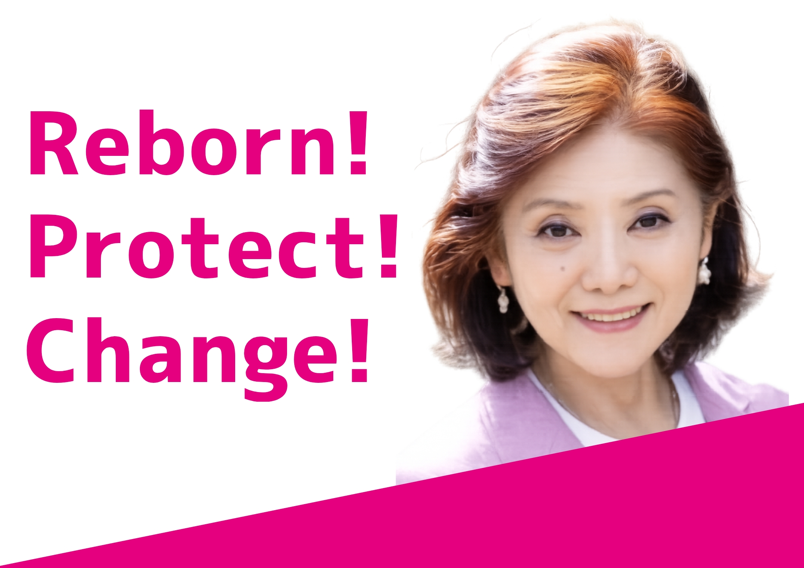

さわら わかこ
佐原若子
元衆議院議員
REBORN東北（いのちの党東北勝手連）代表
基本政策
Reborn!
東北を、日本を、自然を、豊かな経済を蘇えらせる。
詳しく見る
- 脱原発のために、再生可能エネルギーに投資する。
- 六ヶ所再処理工場などの核燃料サイクル事業は中止する。
- 原発の廃炉は国のお金を投じて「廃炉ニューディール」を実施し、廃炉によって原発立地地域が経済的打撃を受けないように地域の産業・雇用を促進する。
Protect!
国民の暮らしを、いのちを守る。
詳しく見る
- 消費税の廃止と一律給付金により、すべての国民の暮らしと中小企業・個人事業主を守る。
- 医療や介護・保育、教育などに携わる人々の給料を上げて処遇を改善する。
- 農林水産業などの一次産業従事者の所得を補償し、食を守る。
- 犬猫殺処分ゼロを目指す。ペットの生体販売を禁止し、人間も動物も同じ生き物として、いのちを守る。
- 畜産動物についても、劣悪な環境での工場的畜産を禁止し、動物福祉（アニマルウェルフェア）に基づいて飼育や処分方法に関する基準を定める。
- 現行の平和憲法を尊重し、いのちと平和を守る。
Change!
政治を変える。価値観を変える。
詳しく見る
- 現政権に立ち向かい、民のための政治に変える。
- 古い価値観をアップデート。「男らしく」「女らしく」「日本人らしく」ではなく「あなたらしく」へ。
- 性の多様性や障がいへの理解を促進し、インクルーシブな社会を実現する。
- 年齢・性別・障がいの有無・学歴・国籍などで人間が差別されない社会をつくる。
世界がぜんたい幸福にならないうちは
個人の幸福はあり得ない
宮沢賢治の言葉より
プロフィール
佐原若子（さわら わかこ）
- 元衆議院議員
- 歯科医師
- 核燃阻止一万人訴訟原告団
- 2019年青森県知事選挙に出馬
- 2024年衆議院議員選挙にて、れいわ新選組東北ブロック比例候補として出馬、当選
- 2026年衆議院議員選挙にて、れいわ新選組青森3区公認候補者として出馬
現在は、れいわ新選組から「いのちの党」へ党名変更に伴い、いのちの党東北勝手連として「REBORN東北」の名称でボランティアとして活動中
お知らせ
- お知らせ2026年12月18日 核燃阻止一万人訴訟原告団 意見陳述予定
活動報告
- 活動2026年10月19日 いのちの党 奥田ふみよ議員 予算委員会質疑後の 国会前アフターコールデモに参加しました
SNS
問い合わせ
- 事務所
- 準備中
- 電話
- 準備中
- メール
- 準備中